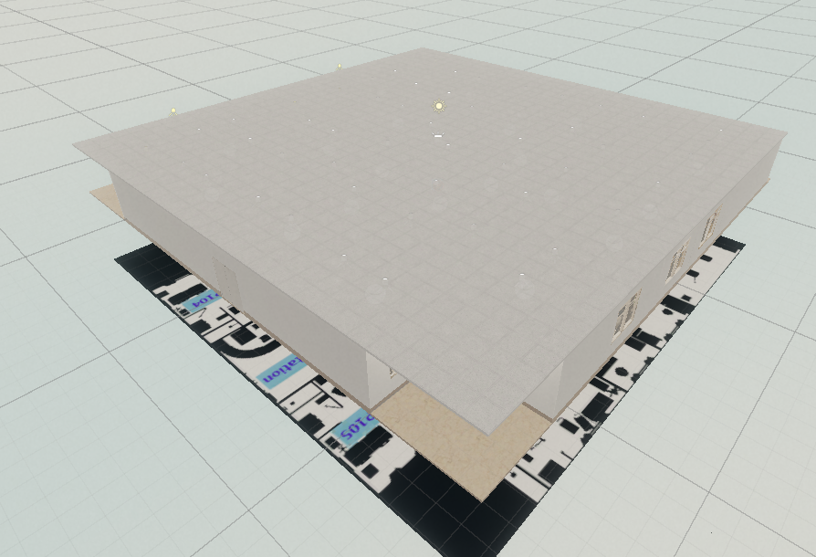
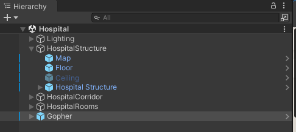
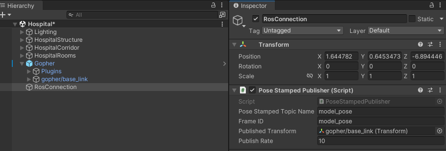
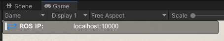

Install
The Nursing Robot Simulation consists of two componants, the Unity enviornment, and the ROS code.
Dependencies
This repository has been developed and tested in Ubuntu 18.04 and ROS Melodic, with the Unity 2020.3 LTS.
Before running this package, it is highly recommended to go through the tutorial of Unity Robotics Hub demo first. They provided a very detailed instruction to set up a robot arm in Unity. Also, you should try this tutorial on how to set up a mobile robot. The second tutorial provides more robot sensors and ROS publishers and subscribers examples. After these two tutorials, you should be able to understand how to set up a robot in Unity and how to communicate between ROS and Unity.
Unity Install
Download and install the proper Unity version via Unity Hub. In the folder for your unity project, git clone this repository for Unity simulation.
cd <Unity_Path>/Unity/Projects
git clone git@github.com:hiro-wpi/Gopher-In-Unity-Simulation.git
Unity Setup
Open Unity Hub and in the Projects tab, select ADD to add the “Gopher-In-Unity-Simulation” folder. Select Unity version to be 2022.3 and open the project. It is normal for the project to take a long time to run when opened for the first time.
After launching the project, please navigate to the Scenes folder and open the Hospital scene.
{kind=link}
At this point the a map similar to that above should be visible in the Scene View.
ROS Install
cd ~/catkin_ws/src
git clone --recurse-submodules git@github.com:hiro-wpi/Gopher-ROS-Unity.git
cd ..
catkin_make
Quick Start
Finally, to validate both instalations, run a basic simulation using the Gopher bot.
Unity
Nagivate to the Prefabs folder and drag an instance of Gopher into the top level of the Hiearchy pane as shown below.
{kind=link}
Warning
This instance should be deleted after the conclusion of this tutorial. When designing expiriments you will spawn robot agents programatically
Next create, in order to varify our connection we will create a simple model publisher.
Create a Empty Game Object in the top level of the Hiearchy pane named RosConnection
Add a PoseStampedPublisher script to the componant
Drag the gopher/baselink object (a child of the gopher prefab) to the Published Transform field of the PoseStampedPublisher componant.
The completed configuration should apear as below.
{kind=link}
Note
The above aproach is purley for quickly validating the setup. It is not recomended to use the PoseStampedPublisher for Robot links, as this should be handled in the TF tree.
Finally navigate to Robotics>ROS Settings and ensure your ROS IP Address and ROS Port are correct.
ROS
Ensure all the relevant ROS workspaces are sourced and then run the following launch command.
roslaunch gopher_endpoint server.launch
Validation
With the gopher_endpoint server running, you may now start the unity project. If a connection is established, you will see blue arrows in the Game pane as shown below.
{kind=link}
In a terminal connected to your ROS Master run the following command to echo the created model topic.
rostopic echo model_pose
Finally in the Unity Game pane, drive the robot base via the Arrow Keys. If you see the position update in the echoed topic you have successfully validated your setup.